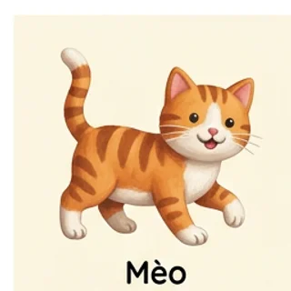
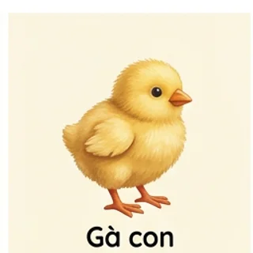

GÓC HỌC TIẾNG ANH CỦA BẠN
Mỗi từ mới,
một thế giới nhỏ.
Nhìn tranh, nghe tiếng Anh, ghi nhớ tự nhiên. Cùng khám phá khu vườn từ vựng của bạn mỗi ngày.
414 từ vựng9 chủ đềMinh họa AI
hello, little world!

cat /kæt/
chick /tʃɪk/01 / LUYỆN TẬP
5 phút cũng là một khởi đầuSẵn sàng gieo một từ mới?
Chọn cách học phù hợp với bạn hôm nay.
Chọn số câu phù hợp với thời gian học: 5, 10, 20, 30, 40 hoặc 50 câu. Nếu chủ đề có ít từ hơn số câu đã chọn, hệ thống sẽ lấy tối đa số từ hiện có, không lặp từ trong cùng lượt.
02 / KHÁM PHÁ
Một khu vườn đầy hình ảnh.
Mỗi từ một bức tranh. Chạm vào loa để nghe phát âm.
03 / TỪNG BƯỚC TIẾN BỘ
Những từ bạn đã gieo.
Tiến độ học tập của bạn
Câu 1/20Đúng: 0Tất cả chủ đề 00:00
CÂU 01
...
Chọn nghĩa tiếng Anh phù hợp
Chọn một trong bốn đáp án.
HOÀN THÀNH LƯỢT HỌC
0/20
Làm tốt lắm!
Phát âm dùng giọng đọc tiếng Anh có sẵn trong trình duyệt (Web Speech API). Nếu chưa nghe được, hãy kiểm tra âm lượng, chọn giọng English trong cài đặt thiết bị hoặc thử Chrome/Edge. Âm thanh cần trình duyệt hỗ trợ.